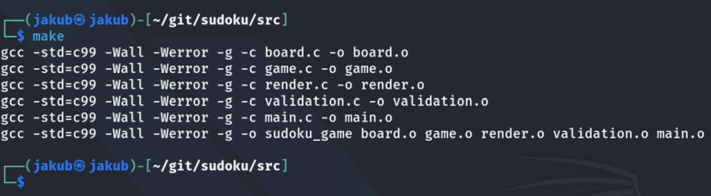
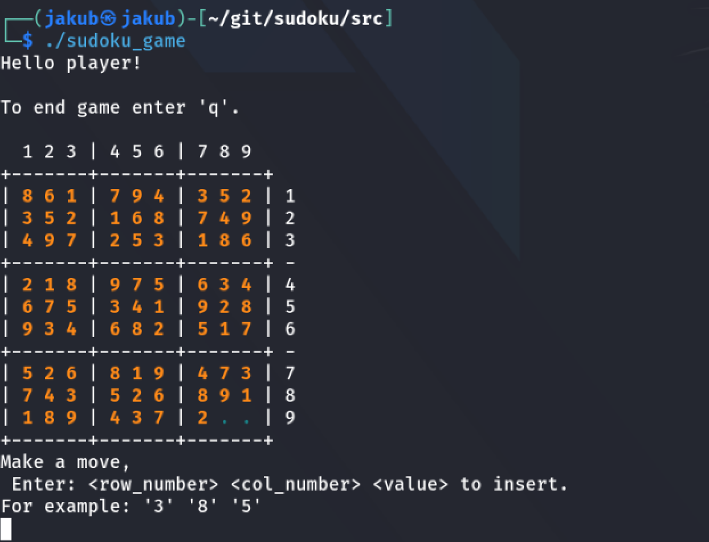

February 10, 2026
Sudoku game code recovery
Background story
A few years ago... one beautiful sunny day... I woke up from bed and then it hit me... The idea to program a Sudoku game. It was like a bolt from the blue. I didn't hesitate for a second and immediately started writing code:)
I designed the struct sudoku and some other functions to provide the full game function. All it was in one main.c file. It was very nice project however, made by an inexperienced young programmer. That's why it "worked" well. The game was full of bugs and became unplayable after a few moves. That was the end of the day and I never tried to fix it again after that... until now.
From the past to the present
At this time I decided to completely rebuild this project and make it professional.
When reworking, I was based on the original code.
(January 2026)
Modules
I divided the entire project into files according to the method of use:
-
board.h & board.c
Including typedef struct Sudoku, define the SIZE dimension for sudoku and contain functions for board operations:
board_init(),board_clear(),board_copy_initial(),board_is_cell_free,board_is_full(),board_get()andboard_set()value. -
validation.h & validation.c
Module for validation of sudoku row's, sudoku column's, sudoku block's (3x3), full board validation and player move validation.
-
render.h & render.c
The basic function is to draw the playing field in a loop using the
printf()andboard_get()functions inrender_board(). The second function isrender_message()- basically the same like printf. Perhaps other features will be:render_cell(),render_prompt(),render_error(). -
game.h & game.c
- game_init() - Initialization of Sudoku board
- game_loop() - Main game loop
- game_input() - Get input from player
- game_is_initial() - Check if the value in cell is initial or not
- game_apply_move() - board_set()
- game_is_finished() - Checking board_is_full() and validate_board()
- main.c - where it all comes together into one whole.
-
Makefile -
./sudoku_game
Gameplay

Sudoku compilation

Starting sudoku game
Project repository
You can find and try the whole project here:
Sudoku repository →
Improvements
The next steps can be:
- generate_random_sudoku
- set_game_level
- init_sudoku_level
- GUI